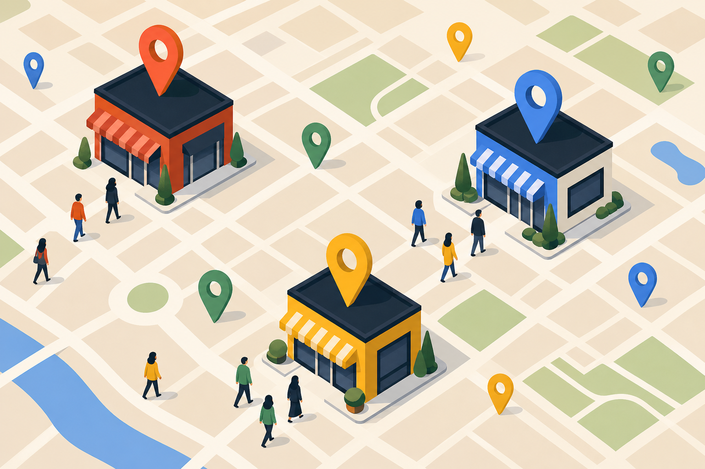
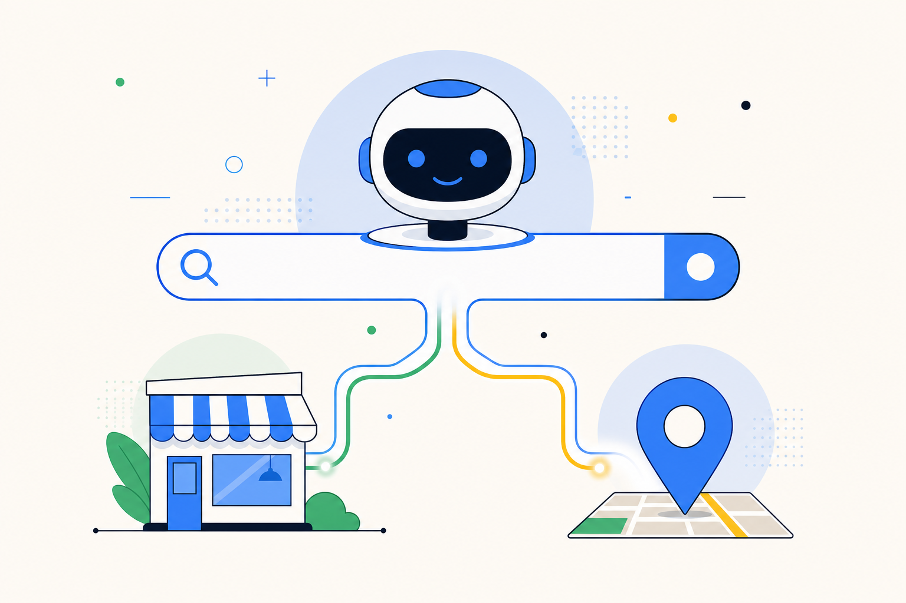

Googleマップ集客とは
― 順位対策から手放し運用までの完全ガイド

Googleマップ集客とは、Googleビジネスプロフィール(GBP)を軸に、Googleマップ検索での露出・クリック・電話・ルート検索・来店・売上までを設計する集客手法です。従来のMEO（順位上位化）だけでは来店に直結しないため、2026年は「順位ではなく来店KPI」で運用する時代に入りました。本記事は SearchMania が延べ数十店舗で実運用してきたノウハウをもとに、GBP設定・写真・投稿・口コミ・AI検索対策・費用相場・会社選びまでを1本にまとめた決定版です。
Googleマップ集客とは何か（定義と全体像）
Googleマップ集客とは、Googleマップおよび Google検索のローカル枠（地図パック）における自店舗の露出・クリック・来店・売上を設計する集客手法の総称です。単に検索順位を上げるだけの「MEO対策」より広く、店舗運営そのものと直結した実務です。
Googleマップ集客の対象になるのは、「渋谷 カフェ」「那覇 整骨院」のように地域名＋業種で検索されたり、スマートフォンの Googleマップアプリ上で「近くの◯◯」と探されるすべてのケースです。総務省の調査でも、地域検索の 46% 以上がスマホ経由で発生しており、そのうち約 8 割が Googleマップの検索結果を経由すると言われています。
Googleマップ集客に含まれる7つの領域
- Googleビジネスプロフィール(GBP)最適化 ― 基本情報・カテゴリ・属性の完全整備
- 写真運用 ― 外観・内観・商品・スタッフ・利用シーンの継続追加
- 最新情報投稿 ― キャンペーン・イベント・お知らせの定期配信
- 口コミ獲得と返信 ― 継続獲得の仕組み化と全件返信
- サイテーション設計 ― 第三者ポータル・SNSでの言及増加
- 公式サイト連携 ― LocalBusiness 構造化データによる同一エンティティ認識
- インサイト分析と改善 ― 表示回数・電話・ルート検索の数値管理
この7領域を 継続的 に運用することで、Googleマップ上の露出が数倍〜数十倍になり、電話・ルート検索・来店といった「実店舗が本当に欲しい行動」が積み上がります。順位を1つ上げるより、これらのKPIを上げる方が売上に直結します。
なぜ今、Googleマップ集客が最優先なのか
2026年時点で店舗集客の優先度が Googleマップ ＞ 公式サイト ＞ SNS ＞ ポータルサイト の順に変わりつつあります。理由は3つです。
理由1: ユーザーの「検索起点」がGoogleマップに移動している
飲食・美容・整骨・不動産といった来店型ビジネスでは、ユーザーは Google検索より先に Googleマップアプリを直接開くケースが増えています。「近くの居酒屋」「今開いている整骨院」といったニーズは、地図上で解決するのが最短だからです。この動線上に自店舗が出ていなければ、そもそも比較の土俵にすら立てません。
理由2: AI検索時代でも「地図パック」だけは残る
ChatGPT Search・Gemini・Perplexity・Google AI Mode などの AI検索が拡大しても、地域名＋業種のクエリではGoogleマップの地図パックが必ず表示されます。AI検索が発達するほど「10本の青リンク」経由の流入は減りますが、地図パックは物理的な位置情報が絡むためAIに完全代替されにくく、むしろ相対的に価値が上がります。
理由3: 費用対効果が広告より高い
Google広告は 1クリック 100〜500円かかりますが、Googleマップ集客の運用改善で得られる表示・電話・ルート検索はすべて無料（オーガニック）です。GBP の基本整備だけで、月あたり数千〜数万インプレッションが増える店舗は珍しくありません。
MEO と Googleマップ集客の違い
この2つは混同されやすいですが、目的とKPIが違います。
| 項目 | MEO対策（狭義） | Googleマップ集客（広義） |
|---|---|---|
| 目的 | Googleマップ検索での順位を上げる | 来店・電話・売上まで伸ばす |
| 主要KPI | 指定キーワードの順位（1〜3位） | 表示回数・電話・ルート検索・来店・売上 |
| 施策の中心 | キーワード対策・被リンク・順位計測 | GBP運用・写真・投稿・口コミ・接客 |
| 成果報告 | 順位レポート | 実来店・実売上レポート |
| 期間 | 3〜6ヶ月で順位変動 | 1〜2週間で表示数変化、3ヶ月で来店変化 |
「順位1位なのに電話が来ない」という相談は非常に多いです。原因は、写真が古い・営業時間が不正確・口コミ返信が止まっている・投稿が半年ない、といった 順位以外の要素 がほぼ全てです。順位を上げるだけの MEO 業者に月数万円払っていても、来店に繋がらないのはこのためです。
順位を決める3要素とKPI設計
Google自身が公式に説明しているローカル検索の順位決定要因は、関連性・距離・知名度 の3つです。
1. 関連性（Relevance）
ユーザーが検索したキーワードと、あなたのGBPの情報がどれだけ一致しているか。カテゴリ・サービス名・商品名・説明文・投稿のテキストがここに効きます。「マッサージ」で検索されたいのにカテゴリが「整体院」だけでは弱いです。
2. 距離（Distance）
検索者の現在地（またはクエリに含まれる地名）と店舗の物理距離。これは動かせない要素ですが、カバー範囲は工夫できます。GBPのサービス提供エリア設定、複数店舗展開、駅名/エリア名を投稿本文に含めるなど。
3. 知名度（Prominence）
Web全体でどれだけ言及・評価されているか。口コミ数・口コミの★平均・第三者サイトのサイテーション・被リンク・公式サイトのSEOなど、単一施策ではなく複合的に効いてくる要素です。ここが3要素の中で最も伸ばしにくく、かつ最も差がつきます。
実務で追うべきKPI（4層モデル）
- 表示回数 ― マップと検索で何回表示されたか（先行指標）
- アクション ― 電話・ルート検索・サイトクリック・メッセージ（意欲指標）
- 来店 ― 実際に何人来たか（成果指標／POSやレジで測定）
- 売上・LTV ― 客単価と再来店率（事業指標）
この4層で毎月レポートを出し、上流（表示回数）が伸びているのに下流（来店）が伸びないなら店内接客に問題があり、上流から伸びていないなら GBP 運用に問題がある、と切り分けます。
今日から始める7つの具体施策
店舗オーナー自身が今日から取り組める7手順です。すべて無料または低コストで実行できます。
-
Googleビジネスプロフィール(GBP)の完全登録
オーナー確認済み・NAP(店名/住所/電話)の完全一致・営業時間・カテゴリ・属性・サービス・商品まで100%埋める。空欄が1つあるだけで、Googleの評価は「情報不足」に落ちます。特にサブカテゴリの選定は順位に直接効きます。
-
高品質な写真を最低30枚アップロード
外観・内観・スタッフ・商品/メニュー・利用シーンの5カテゴリを最低6枚ずつ。撮影は明るい時間帯にスマホ縦位置で。写真はGBP順位の判定要素ではないと言われますが、クリック率が2〜3倍変わるため実質的に最重要施策です。
-
最新情報投稿を週1〜2本の頻度で継続
新メニュー・キャンペーン・イベント・スタッフ紹介など。100〜300字＋画像1枚＋CTA(電話予約/来店予約)1つが最適。投稿が半年空くと「活動していない店舗」と判定され、順位が徐々に落ちます。
-
口コミ返信を全件24時間以内
★5にも★1にも返信。誠実な文体・店舗名/サービス名を自然に含める。返信率と速度が「知名度」の評価に直接効くと Google が公式に述べています。悪い口コミへの誠実な対応は、次に読むユーザーの信頼を上げます。
-
口コミ獲得導線を店舗内・購入後導線に埋め込む
レシート・名刺・卓上POP・LINE配信・完了メールに口コミQRを設置。強制せず「もしよかったら」の一言を添える。SearchMania の クチコミ案内名刺 のような専用ツールで、依頼〜投稿完了までの離脱率を大幅に下げられます。
-
サイテーション(第三者言及)を意図的に増やす
エキテン・ホットペッパー・食べログ・iタウンページ等、業種別ポータルに正確なNAPで登録。「知名度」評価に効きます。NAP表記は完全一致が原則で、丁目/番地の表記揺れも Google の別店舗として判定されるリスクがあります。
-
公式サイトとGBPを構造化データで接続
公式サイトに LocalBusiness JSON-LD を設置し、GBPのURL欄と一致させる。Google に「同一の店舗エンティティである」と明示することで、双方の評価が合算されます。2026年はAI検索対策の観点でも必須。
AI検索時代のGoogleマップ集客（AIO）

ChatGPT Search、Gemini、Perplexity、Google AI Mode の登場で、検索の風景は大きく変わりました。しかし Googleマップ集客はAI検索と敵対しません。むしろ土台になります。
AI検索は「構造化データ」を優先して読む
AIエージェントは HTML の見た目ではなく、schema.org 準拠の構造化データ・OGP・JSON-LD・sitemap を最優先で読みます。GBP に登録されている店舗情報は Google 経由で AI に流れる公式ソースの一つです。ここが空欄だらけだと、AIの推薦候補から外れます。
従来のMEO施策がそのままAIOの土台になる
- NAP完全一致 → AIが同一エンティティと判定できる
- カテゴリ・属性の正確な設定 → AIが「◯◯ができる店」と分類できる
- 口コミの多さと返信の質 → AIが「評判の良い店」と評価できる
- 写真の充実 → 生成AIの回答に画像として引用される確率が上がる
- 公式サイトのFAQPage schema → AIが直接回答文として引用する
AI検索で推薦されるための追加施策
- 公式サイトに FAQPage と Article の schema を実装する
llms.txtをルート直下に置き、AI引用ポリシーを宣言する- ブログや店舗紹介ページで「地域名＋業種＋悩み」の一次回答を書く（例:「那覇 整骨院 交通事故 治療 流れ」）
- 第三者サイトに正確な情報で言及される（ローカルメディア・業種ポータル・寄稿）
SearchManiaは 2026年8月時点で、公式サイト・支援先サイトの全てにこれらのAIO対策を標準実装しています。詳細は llms.txt と各サイトのJSON-LDでご確認いただけます。
「手放しマップ集客」という新しい選択肢
Chapter 05 で述べた通り、Googleマップ集客の7施策のうち、写真追加・投稿・口コミ返信の3つは 継続運用 が最大の壁です。オーナーは本業で手一杯で、GBPを毎週触るのは現実的ではありません。
そこで SearchMania が提唱しているのが 「手放しマップ集客」 という運用モデルです。
手放しマップ集客が向いているケース
- 店主・オーナーが1人で運営していて、GBPを毎週触る時間がない
- 過去にMEO業者に依頼したが順位レポートだけで来店に繋がらなかった
- チェーン展開しており、複数店舗のGBPを一括管理したい
- 広告費を抑えつつ、地図経由の来店を継続的に増やしたい
手放しマップ集客が向いていないケース
- オーナー自身が発信することがブランド価値になる業態（作家・アーティスト等）
- そもそも Googleマップ経由の集客が発生しにくい業態（BtoB卸売等）
- 短期(1ヶ月以内)で結果を求める場合（Google広告の方が確実）
費用相場と会社選びのチェックリスト
2026年時点の相場感
| プラン | 月額目安 | 内容 |
|---|---|---|
| 初期整備のみ（単発） | 5万〜15万円 | GBP完全登録・写真撮影・初期投稿10本など |
| 順位対策型MEO | 2万〜5万円 | 順位計測・キーワード対策・被リンク（旧世代） |
| 運用代行型（標準） | 3万〜8万円 | 投稿・返信・写真追加・月次レポート |
| ハイブリッド型 | 8万〜15万円 | 運用代行＋公式サイト連携＋AI検索対策 |
| 手放しマップ集客（AI型） | 1万〜3万円 | AI＋担当スタッフのハイブリッド運用（新世代） |
会社選びの10項目チェックリスト
- 順位ではなく 表示回数・電話・ルート検索・来店 の実数値で報告してくれるか
- 契約前に GBPインサイトの現状分析 を無料で見せてくれるか
- 写真・投稿・返信を 誰が実作業するか が明示されているか
- 成果報告に 比較（前月比・前年比） が含まれるか
- 解約条件が明確で、最低契約期間が6ヶ月以内 か
- 公式サイトとの 構造化データ連携 まで対応するか
- AI検索対策（FAQPage / llms.txt）に 言及があるか
- 過去実績を 数値と店舗名（許可済み） で公開しているか
- 担当者が Googleビジネスプロフィールの管理画面を実際に操作 しているか（丸投げしていないか）
- 初回打ち合わせで 順位以外の質問に具体的に答えられるか
10項目中7つ以上Yesであれば、少なくとも旧世代の順位追い型ではありません。SearchMania の場合、全10項目に対応する運用体制を標準としています。
よくある質問（FAQ）
MEO対策とGoogleマップ集客は何が違うのですか?
厳密にはMEO(Map Engine Optimization)はGoogleマップ検索結果での順位上位化を指す狭い概念。Googleマップ集客はそこから来店・売上に繋げる運用全体を指す広い概念です。順位が上がっても電話や来店が増えない事例が多発しており、順位ではなく来店KPIまで見る運用が2026年の主流です。
Googleマップ集客に効果が出るまで何ヶ月かかりますか?
GBPの基本整備だけで最短1〜2週間で表示回数が1.5〜2倍になるケースが多数。順位に反映されるのは通常1〜3ヶ月。競合が強い地域(渋谷・新宿・那覇国際通り等)では6ヶ月〜を見込むべきです。
AI検索(ChatGPT/Gemini/Perplexity)にGoogleマップ集客は関係ありますか?
強く関係します。ChatGPT SearchやGemini、Google AI ModeはGoogleビジネスプロフィールの構造化情報を参照するため、GBPが整っている店舗ほどAI検索の推薦候補に出ます。従来のMEO施策はそのままAIO(AI検索最適化)の土台になります。
口コミが少ないですが、集客できますか?
口コミ0件でも表示は可能ですが、地図上のクリック率が競合の1/3程度に落ちます。最初の30件までは自力で口コミ獲得導線を作る必要があります。以降は継続獲得の仕組み(QR/LINE/自動リマインド)で自然増します。
MEO業者に月◯万円払っていますが、順位が上がりません。なぜですか?
①順位計測ツールで報告される「上位表示率」は特定条件下の数値で来店に直結しないケース、②GBPの基本情報が競合より薄い、③写真・投稿・口コミ返信の運用が実質未実施、のいずれかが多いです。順位ではなく「表示回数・電話・ルート検索・来店」の実数値で契約を評価してください。
手放しマップ集客とは何ですか?
SearchManiaが提唱する運用モデルで、Googleマップ集客に必要な最新情報投稿・口コミ返信・写真追加をAIが自動実行し、オーナーが本業に集中できる状態を指します。詳細は こちら を参照ください。
沖縄以外の地域でも支援可能ですか?
可能です。SearchManiaは沖縄・那覇市に本社を置きますが、GBP運用はオンラインで完結するため全国対応しています。実際に本州・九州・北海道の店舗もご支援しています。
まとめ ― 次の一歩
ここまで読んでいただき、ありがとうございます。Googleマップ集客の全体像を1本にまとめると、以下の3行に集約されます。
- 順位ではなく、表示回数・電話・来店の実数値で運用する
- 7つの施策を継続することが唯一の勝ち筋
- 継続が難しければ「手放しマップ集客」で仕組み化する
SearchMania は 沖縄・那覇市を拠点に、この Googleマップ集客の実務を数十店舗で運用してきました。順位ではなく 店舗の売上と来店 を伸ばすことをKPIに置いています。もし本記事を読んで「うちの店舗のGBP、現状どうなっているんだろう？」と思われたら、無料でインサイト診断をお出しします。